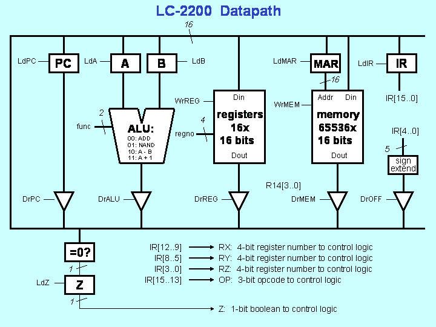

Project 1
CS 2200 - Intro to Systems and Networks
Project Requirements
- 32-bit Ubuntu 10.04 installation. Download vanilla install here or use this custom VirtualBox image.
- Optional VirtualBox. You can use this to run Ubuntu as a virtualized machine on Windows or Mac.
- Build-essential package. If you used the custom VirtualBox image then you already have this. If not, then open the command line in your Ubuntu installation and run the following command:
sudo apt-get install build-essential
- Logisim. Be sure you are using the most updated version (this means do NOT use GTLogisim from CS2110). Download here.
Project Overview and Description
Project 1 is designed to give you a good feel for exactly how a processor works. In Phase I, you will design a datapath in Logisim to implement a supplied instruction set architecture. You will use the datapath as a tool to determine the control signals needed to execute each instruction. In Phases II and III you are required to build a simple finite state machine (AKA control-unit) to control your computer and actually run programs on it.
Note: You will need to have a working knowledge of Logisim. Make sure that you know how to make basic circuits as well as subcircuits before proceeding. Always remember to see the TAs if you need help.
Phase 1 - Datapath Implementation
In this phase of the project, you must first learn the instruction set architecture (ISA) of the processor we will be implementing. After, you will implement a complete LC-2200-16 datapath in Logisim using what you have learned.
You Must:
- Learn and understand the LC-2200-16 ISA. Simply read and understand this manual. Do NOT move on until you have fully read and understood the ISA as it will be impossible to implement the datapath if you do not.
- Using Logisim, implement the LC-2200-16 datapath. The basic operation of the datapath will be discussed in class. As you build the datapath, you should consider adding in additional functionality that will allow you to operate the whole datapath "by hand" so that you can test individual operations. We suggest your datapath might include devices to allow you to arbitrarily put a value on the bus as well as view the current value of the bus. Feel free to add any additional bells and whistles (maybe LEDs would be better) that you desire to help you understand what is going on.
The below image represents a simple schematic of the datapath that you are to implement. The "control logic" component referenced in the image will be implemented in Phase 2 and 3 of the project.

Tips:
- You will have to build your own ALU. Recall that it must support A + B, A nand B, A-B and A+1.
- Logisim has single registers but doesn't have a register file. You can choose to either use a block of RAM to act as your register file or you can build your own. Remember that, in either case, you must make R0 ($zero) a zero register (i.e. no matter what attempt to load into that register, it should ALWAYS output "0").
- To load programs onto the implemented datapath, you must use the provided Assembler to convert your program from assembly to raw bytecode (hex). The raw hex can then be loaded into the memory component. For more information on how to assemble, please see the README contained in the "Assembler" folder. Note: Although programs can be loaded into the datapath, you will have to run them "by hand" to test the datapath since the control unit is not finished until Phase 2 and 3.
Phase 2 - Microcontrol Unit Implementation
In this phase of the project, you will use Logisim to implement the microcontrol unit of the LC-2200-16. This component is referred to as "Control Logic" in the images/schematics. The microcontrol unit will control all of the signal lines to the various parts of the datapath. There are two versions of the microcontrol unit that you can implement, a standard version and a bonus version. Implementing the bonus version will result in a possible
10 point bonus.
You Must:
- Choose whether you implement the standard microcontrol unit or the bonus microcontrol unit. Implementing the bonus microcontrol unit will result in a possible 10 point bonus.
- Implement the chosen microcontrol unit using Logisim. The above links contain all of the necessary information. Take note that the input and output signals on the schematics directly match the signals marked in the LC-2200-16 datapath schematic above.
Phase 3 - Microcode and Testing
In this final stage of the project, you will write the microcode control program that will be loaded into the microcontrol unit you implemented in Phase 2. Then, you will hook up the control unit you built in Phase 2 of the project to the datapath you implemented in Phase 1. Finally, you will test your completed computer using a simple test program and ensure that it properly executes.
You Must:
- Write the microcode control program for the microcontrol unit you chose in Phase 2. Please see the README file located in appropriate folder (Bonus or Standard) for the microcontrol unit you chose for more information and instructions on how to implement the microcode.
- After the microcode has been written, use the provided tools to convert it to raw hex. This should then be loaded into your implemented Microcontrol unit's memory component. The tools to convert the microcode to hex can be found in the appropriate microcontrol unit folder (Bonus or Standard).
- Now, connect the completed control unit to the datapath you implemented in Phase 1. Using the provided schematics from Phase 1 and 2, this should be trivial as all signal names should match up.
- Finally, it is time to test your completed computer. Use the provided Assembler (found in the "Assembler" folder) to convert a test program from assembly to hex (see the README for help). We recommend using test programs that contain a single instruction since you are bound to find a few bugs at this stage of the project.
What to Submit
Please submit all the necessary files in a compressed archive (zip or tar is fine).
You Must Submit:
- Datapath logisim file
- Microcontrol Unit logisim file (unneeded if you implemented this in the same file as the datapath)
- Microcode (<filename>.fsm for standard microcontrol unit or <filename>.xml for bonus version, NOT the hex files)
Don't forget to sign up for a demo slot! We will announce when these are made available. Failure to demo results in an automatic 0.
You should always redownload your assignment from t-square after submitting to ensure that all necessary files were properly uploaded.
As always, please contact the TAs if you have any questions.